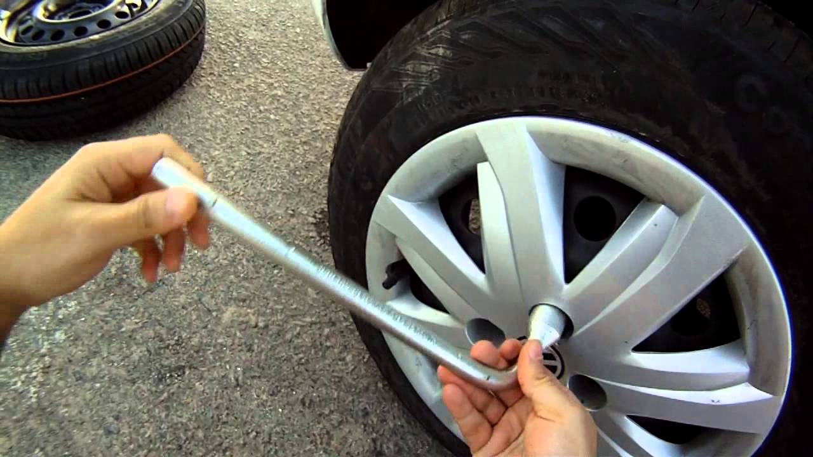
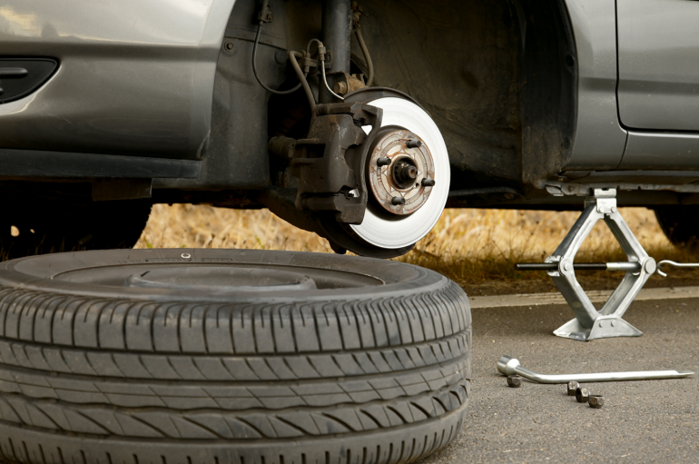
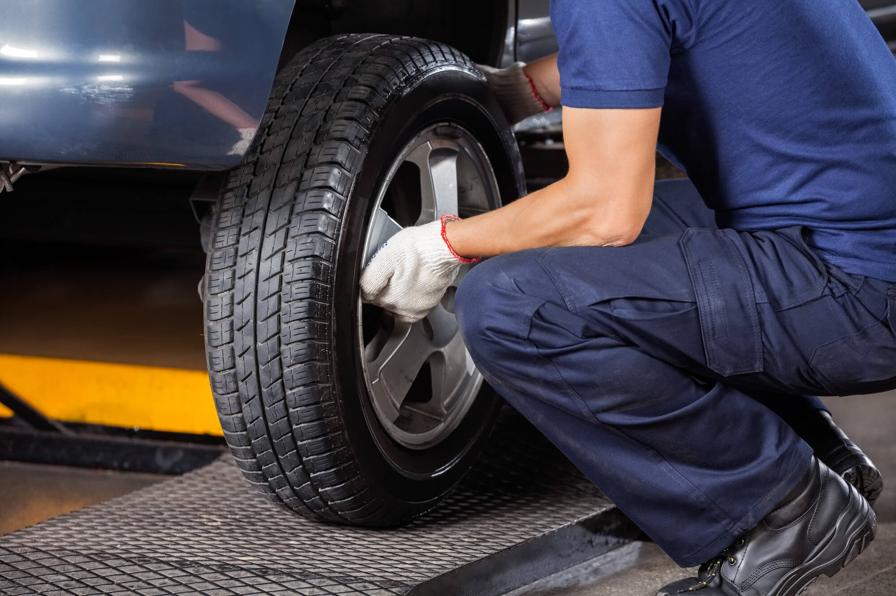
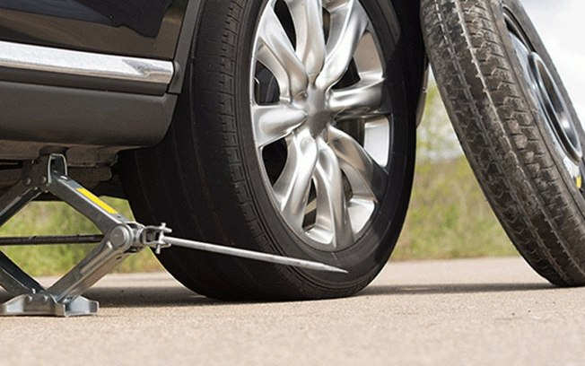
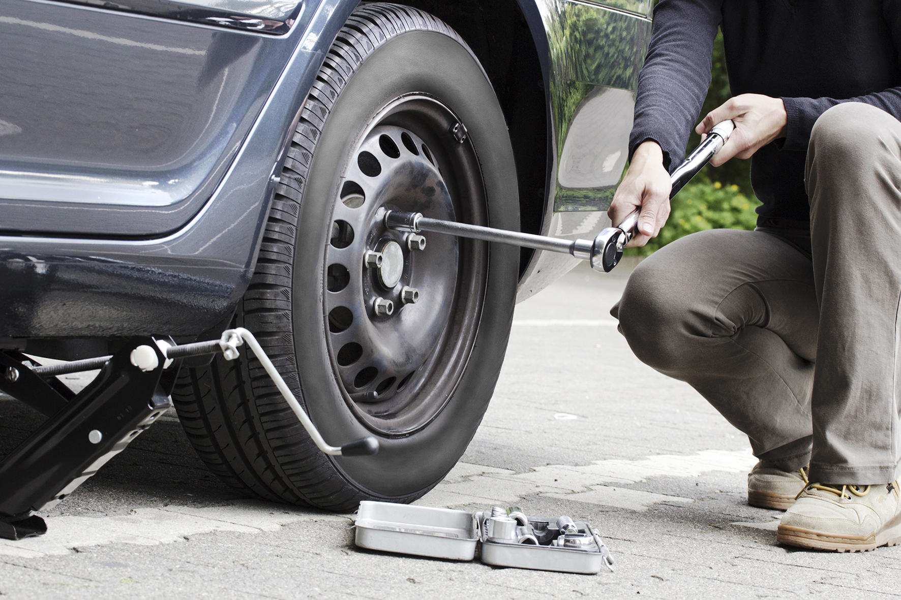

Esta atividade trabalha o conceito de algoritimos, pois o aluno irá numerar os passos para trocar o pneu, além do pilar de reconhecimento de padrões, pois ao clicar em ajuda o aluno verá um video de como trocar um pneu, onde ele porá reconhecer os padrões e aplicar no desafio.